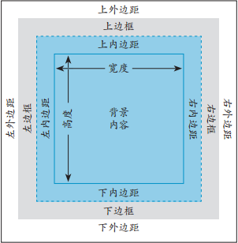
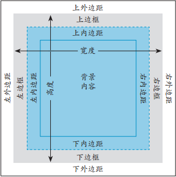

1.内容与显示分离
2.布局方法：网站设计主要有两大类型：固定宽带和响应式
对于固定布局，整个页面和每一栏都有基于像素的宽度，响应式页面也称为流式页面，它使用百分数定义宽度，允许页面随显示环境的改变进行放大或缩小
3.浏览器注意事项：并非所有的访问者都使用同样的浏览器，建议在开发过程中用几个浏览器对页面定期进行测试，这样在最后进行全面测试时，碰到的问题就会少一些
高效网页的核心是结构良好、语义化的HTML
1.恰当地使用article、aside、nav、section、header、footer和div等元素将页面划分成不同的逻辑区块，根据需要，对它们应用ARIA地标角色
2.按照一定的顺序放置内容，确保页面在不使用CSS的情况下也是合理的，将最重要的内容放在最上面，这样搜索引擎就能更好地对网站进行索引
3.以一致的方式使用标题元素（h1~h6），从而明确地标识页面上这些区块的信息，并对它们按优先级排序
4.使用合适的语义标记剩余的内容，如段落、图、列表
5.如果有必要，使用注释来标识页面不同的区域及内容
1.大多数浏览器默认将它们无法识别的元素作为行内元素处理，所以可以将代码：article, aside, figcaption, figure, footer, header, main, nav, section { display:block; }添加到网站的主样式表文件
2.有两种方式可以实现在Internet Explorer9之前的IE中为新的HTML5元素设置样式（只能选择一种，不能两种都用）
(1)在head元素中添加代码<!--[if lt IE 9]> <script src="http://html5shiv.googlecode.com/svn/trunk/html5.js"></script> <![endif]-->，这段代码会从外部网站（googlecode.com）加载该JavaScript文件，其中<!--[if lt IE 9]><![endif]-->表示只有IE9以下版本可识别，通常，最好在页面结束的位置加载JavaScript，不过，HTML5 shiv是少有的必须在head中加载JavaScript的情况之一，否则，它就不起作用
(2)更好的方式是将该JavaScript文件放在你自己的网站上，这样可以避免在googlecode.com上文件出问题时，网站不会在旧版本的IE中崩溃，可以通过https://github.com/aFarkas/html5shiv/下载HTML5 shiv的ZIP文件，再将ZIP文件里的dist文件夹下的html5shiv.js复制到你的网站的某个子目录（如名为js的目录），然后在head元素中添加代码<!--[if lt IE 9]> <script src="js/html5shiv.js"></script> <![endif]-->
每个浏览器都有内置的默认样式表，不同的浏览器之间会存在一定的差异，HTML会遵照默认样式吧显示，所以开发人员在应用自己的CSS之间需要抹平这些差异，方法如下：
(1)使用CSS重置开始主样式表，比如http://meyerweb.com/eric/tools/css/reset/的重置样式表，这可以有效地将所有默认样式都设为“零”
(2)使用位于http://necolas.github.com/normalize.css/的开始主样式表，这个并非对所有样式进行重置，而是对默认样式进行微调，这样它们在不同的浏览器中具有相似的外观
使用上面的样式不一定要保留它们提供的所有CSS，有些HTML元素在你的网站并未使用就不必在你的样式表中包含这些多余的CSS了
并非一定要用到这两种方法中的一种，也可以保留浏览器的默认样式，并自己编写相应的CSS
CSS处理网页时，它认为每个元素都包含在一个不可见的盒子里，这就是盒模型，这里盒子由内容区域、内容区域周围的空间（内边距，padding）、内边距的外边缘（边框，border）和边框外面将元素与相邻元素隔开的不可见区域（外边距，margin）构成
每个元素都有自己的盒子，它们都有一些决定该元素所在空间及其外观的要素
CSS中的宽度指示的是内边距里内容区域的宽度，如左下图
可以对元素设置box-sizing:border-box;，这时内容宽度、内边距和边距都包含在宽度里面，如右下图
 
1.指定元素的显示方式：display:value;这里value可以是：block让元素显示为块级元素（就像开始新的段落）、inline让元素显示为行内元素（不同于开始新的段落）、inline-block让元素显示为行内元素，同时具有块级元素的特征、none隐藏元素，并将其从文档流中完全移除
设置inlined的元素会忽略任何width、height、margin-top、margin-bottom和padding设置，不过设置为inline-block的元素可以使用这些属性
默认情况下，元素会按照它们在HTML中自上而下出现的次序显示，这称为文档流，并在每个非行内元素的开头和结尾换行
设置display:inline;的元素不接受padding设置，但padding-top和padding-bottom会越界进入相邻元素的区域，而不是局限于该元素本身的空间
2.控制元素可见性：visibility:value;这里的value可以是：hidden让元素不可见，但在文档流中保留它、visible让元素显示出来、collapse当在表格元素中使用时，此值可删除一行或一列，但是它不会影响表格的布局，被行或列占据的空间会留给其他内容使用，如果此值被用在其他的元素上，会呈现为"hidden"
与display属性不同的是，使用visibility隐藏元素时，元素及其内容应该出现的位置会留下一片空白区域
设置为display:none;或visibility:hidden;的元素里的所有内容（包括所有的后代）也会受到影响
1.设置元素宽度和高度
步骤：width:w; height:h;这里w和h是元素内容区域的宽度和高度，可以代表长度或父元素的百分数，或默认的auto
对定宽页面使用像素，对响应式Web设计使用百分数，width和height不是继承的
有些属性在前面带有-webkit-或-moz-，可以让这些规则在旧的Android和iOS设备上起作用，同时在Firefox上也能正常工作，比如：-webkit-box-sizeing:border-box;
还有min-width、min-height、max-width和max-height属性用来设置最小和最大尺寸，max-width属性是为流式布局设置宽度限制的绝佳工具
2.宽度、外边距和auto
如果不显示设置宽度和高度，浏览器就会使用auto，块级元素的宽度是父元素给元素留出的宽度，图像的宽度是实际尺寸，行内元素忽略width属性
如果手动设置width，并将左右外边距设为auto，那么两个外边距就将设为相等的最大值，这样会导致元素居中
最好避免在样式表中指定高度，除非你确定元素的内容不会变得更高，如果希望元素至少具有某一特定高度，可以设置min-height
内边距就是元素内容周围、边框以内的空间，内边距不是继承的
步骤：padding:value;这里value表示带单位的长度（通常为em或像素）或父元素宽度的百分数可以是：一个值表示上下左右的内边距、两个值表示上下，左右的内边距、三个值表示上，左右，下的内边距、四个值表示上，右，下，左的内边距
也可以使用padding-top:、padding-right:、padding-bottom:、padding-left:单独为一个边添加内边距
可以在元素周围创建边框，或针对某一边设置边框，并设置它的厚度、风格和颜色
1.定义边框风格：border-style:value;这里value可以是：none取消边框、dotted点线、dashed虚线、solid实线、double双线、groove槽线、ridge脊线、inset凹边、outset凸边
2.设置边框宽度：border-width:n;这里n是需要的宽度，含单位
3.设置边框颜色：border-color:color;这里color可以是颜色名称、十六进制值、RGB、HSL、RGBA、HSLA颜色
4.使用简记法同时设置多个边框属性：输入border，如果需要，输入-top、-right、-bottom、-left将边框效果限制在某一条，如果需要，输入-style、-width、-color仅使用单个属性设置边框，输入：恰当的值
border简写属性及各个边框属性（border-width、border-style、border-color）均可接受一至四个值
要让边框显示出来，至少必须定义边框样式，默认值是border-style:none;不显示边框，边框是不继承的
通过CSS3的border-image属性，可以使用图片来创建边框，详情请查看W3School
外边距是元素与相邻元素之前的透明空间
步骤：margin:x;这里x是要添加的空间量，可以表示为长度、相对父元素宽度的百分数或auto，auto值依赖于width属性的值
也可以输入：margin-top:或margin-right:或margin-bottom:或margin-left:为元素的某一条边应用外边距
外边距不是继承的，属性值可以是一至四个
当em值用于内边距和外边距时，它的值是相对于元素的字体大小的，而不是相对于父元素的字体大小，em值=要指定的字体大小/元素的字体大小
对于内边距和外边距的设置，建议使用相对单位
float:value;这里value的值可以是：left让元素浮动到左边，其他内容围绕在它右边、right让元素浮动到右边，其他内容围绕在它左边、none默认值让元素完全不浮动
我们可以控制浮动什么时候停止
步骤：clear:value;这里value的值可以是：left阻止元素浮动在该元素的左边、right阻止元素浮动在该元素的右边、both阻止元素浮动在该元素的左右两边、none默认值，允许元素浮动在该元素的左右两边
如果要让浮动元素的祖先元素在高度上包含浮动元素，并消除浮动，可以使用clearfix，代码如下：
.clearfix:before,
.clearfix:after {
content:" ";
display:table;
}
.clearfix:after {
clear:both;
}
也可以对浮动元素的父元素使用overflow属性以替代clearfix方法，代码：overflow:hidden;，有时候overflow:hidden;会将内容截断，对此要多加注意，有时使用overflow:auto;也有效，但这样可能会出现一个滚动条
每个元素在页面的文档流中都有一个自然位置，相对于这个原始位置对元素进行移动就称为相对定位
步骤：指明采用相对位置position:relative;给出偏移量top:d; right:d; bottom:d; left:d;这里的d是希望元素从它自然位置偏移的距离，可以表示为绝对值
其他元素不会受偏移的影响，设置了相对定位的内容可能与其他内容重叠
通过对元素进行绝对定位，即指定它们相对于body或最近的已定位祖先元素的精确位置，可以让元素脱离正常的文档流，与相对定位不同，绝对定位的元素不会在原先的位置留下空白
步骤：position:absolute;根据情况指定top、right、bottom、left的值
根据需要，对希望成为绝对定位参照体的祖先元素添加 position:relative;如果没有这一步，将对元素相对于body计算偏移量，例如可以设置超链接：返回首页返回首页
由于绝对定位的元素脱离了文档流，因此它们可能会相互重叠，或与其他元素重叠
如果不为绝对定位的元素指定偏移量，这个元素将显示在它自然位置上，但不会影响后续元素在文档流中的位置，也就是说后面的元素将会忽略它
当访问者滚动浏览器窗口时，页面内容通常随之上下移动，如果对元素设置固定定位，它就会固定在浏览器窗口中，不会上下移动
步骤：position:fixed;固定定位在很多移动浏览器中效果不佳，如果希望网页能很好地适应移动设备，最好不要使用固定定位
对元素设置position:static;可以覆盖相对定位、绝对定位和固定定位的设置，static是元素的默认值，定位不是继承的
使用相对定位、绝对定位或固定定位时，对于相互重叠的元素，可以用z-index属性指定它们的叠放次序
对于定位元素，z-index最高的数显示在最上面，不管该元素在HTML中出现的次序，相同的出现晚的在上面，对于默认的position:static;z-index属性值默认为0不会变
步骤：z-index:n;这里的n表示元素在定位过的对象堆中的层次的数字，z-index属性不是继承的
元素并不总是包含在它们自己的盒子里，这可能是因为盒子不够大，也可能是因为使用负外边距或绝对定位让内容处于盒子的外面，还可能是对元素设置了显示高度，它的内容太高而无法装入盒子内容，无论是哪种情况，都可以使用overflow属性控制元素在盒子外面的部分
步骤：overflow:value;这里value的值可以是：visible默认值让元素盒子中的所有内容可见、hidden隐藏元素盒子容纳不了的内容、scroll无论元素是否需要，都在元素上添加滚动条、auto让滚动条仅在访问者访问溢出内容时出现，overflow属性不是继承的
可以使用除默认对齐方式以外的多种方式对齐元素，让它们在页面上显得较为整齐
步骤：vertical-align:value;这里value可以是：
baseline：使元素的基准线对齐父元素的基准线
middle：使元素位于父元素中央
sub：使元素成为父元素的下标
super：使元成为父元素的下标
text-top：使元素的顶部对齐父元素的顶部
text-bottom：使元素的底部对齐父元素的底部
top：使元素的顶部对齐当前行里最高元素的顶部
bottom：使元素的底部对齐当前行里最低元素的底部
或者输入元素行高的百分比可以是整数也可以是负数
或者输入某个值分别按照特定的值向上或者向下移动元素
可以使用vertical-align设置表格单元格中内容对齐方式，默认是中间对齐，而不像表格以外的内容那样与基线对齐
一般情况下，浏览器负责控制鼠标指针的形状，可以使用CSS修改指针的形状
步骤：cursor:value;这里value可以是：
pointer：指示停留在链接上时通常显示的指针形状
default：指示箭头
crosshair：指示十字线
move：指示某对象可被移动
wait：指示程序正忙
help：指示可用的帮助
text：指示文本
auto：显示特定情形下通常使用的指针形状
x-resize：显示双向箭头，这里x是其中一个箭头需要指向的方向，可用是n北、nw西北、e东等等
不同的浏览器、不同的系统的指针形状可能有细微的差异